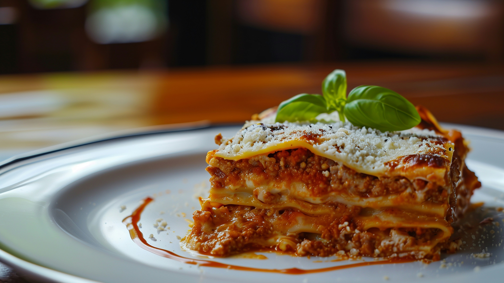

Lasagna
Home

Description
A classic, easy homemade lasagna is made with a rich meat sauce, layers of tender noodles, and a creamy cheese
blend.
Ingredients
- Noodles: 12 lasagna noodles (no-boil or regular boiled al dente)
- Meat Sauce:
- asdasdsd
- 1 lb ground beef (or a mix of ground beef and Italian sausage)
- 1 diced yellow onion and 2 minced garlic cloves
- 36 oz pasta sauce or marinara
- 2 tbsp tomato paste, 1 tsp Italian seasoning, salt, and pepper
- Cheese Mixture:
- 2 cups ricotta cheese (or cottage cheese)
- 1 large egg
- 3.5 cups shredded mozzarella cheese (divided)
- 0.5 cup grated Parmesan cheese
- Fresh chopped parsley
Instructions
- Make the meat sauce: Heat a large pan over medium heat. Brown the ground beef and Italian sausage with the onion and garlic until cooked through. Stir in the pasta sauce, tomato paste, Italian seasoning, salt, and pepper. Simmer for 10–15 minutes.
- Mix the cheese: In a medium bowl, combine the ricotta cheese, egg, half of the mozzarella, Parmesan cheese, and fresh parsley.
- Assemble the layers (in a 9x13-inch pan):
- Spread a thin layer of meat sauce on the bottom of the baking dish.
- Add a layer of lasagna noodles.
- Spread a layer of the cheese mixture.
- Add a layer of meat sauce and a sprinkle of mozzarella.
- Repeat the layers (noodles, cheese, meat sauce) until you run out of ingredients, finishing with a final layer of noodles topped with remaining sauce and the rest of the mozzarella cheese.
- Bake: Cover the dish with foil and bake at 350°F–375°F for about 45 minutes. Remove the foil and bake (or broil) for another 10–15 minutes until the cheese is bubbly and lightly browned.
- Rest: Let the lasagna rest for 15 to 30 minutes before slicing so it holds its shape.